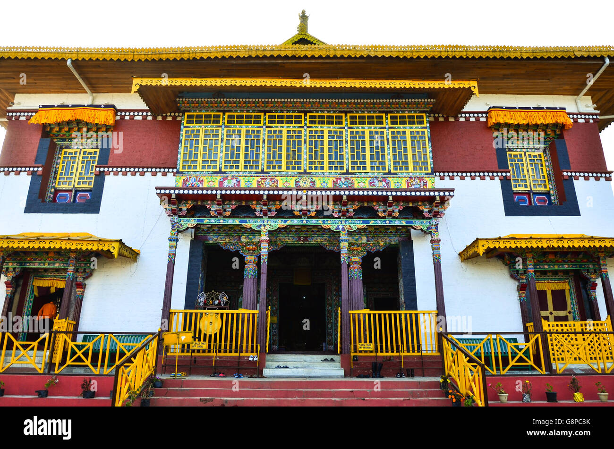

Pemayangtse Monastery was established in 1705 and is a prominent center of the Nyingma order. Situated near Pelling, it offers breathtaking views of the Himalayan mountains. The monastery is renowned for its traditional Tibetan-style architecture, colorful murals, and sacred relics.
Photo Gallery



Key Features
- Historic monastery established in 1705, one of Sikkim's oldest religious sites.
- Famous for exquisite Tibetan-style architecture and vibrant murals.
- Hosts annual Cham dances and religious festivals, attracting devotees and tourists.
- Houses rare Buddhist scriptures, statues, and relics of revered lamas.
- Located on a hilltop offering panoramic views of the Himalayas.
History & Significance
Pemayangtse Monastery played a major role in preserving Buddhist teachings and culture in Sikkim. It is closely linked to the royal family and has been a spiritual center for monks and pilgrims for centuries.
Tourist & Travel Information
The monastery is accessible from Pelling by taxi or shared cab. Visitors can explore the monastery complex, enjoy scenic Himalayan views, and witness cultural festivals, making it a must-visit destination in Sikkim.